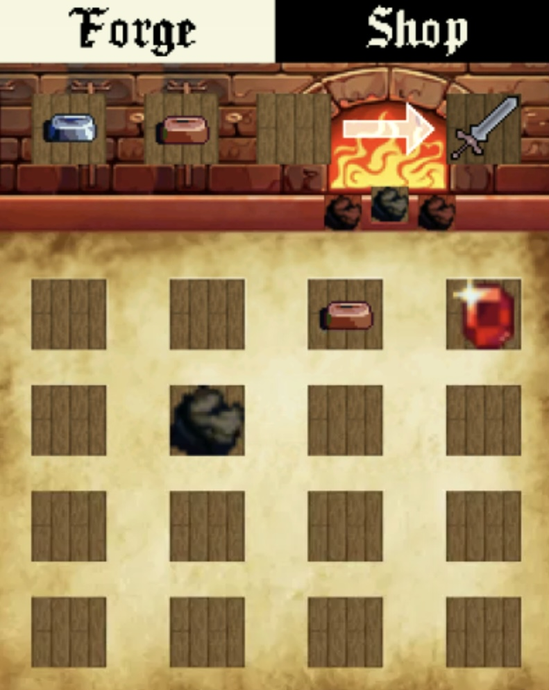

Projets
Septembre 2025 - Avril 2026
Développement d’une solution multi-plateforme unifié
Contexte : Réalisation d’un devoir encadré par un enseignant, en équipe de sept.
Objectif : Développer une application web et mobile synchronisée avec un serveur. Afin de permettre à l’utilisateur de se gérer des arbres généalogiques.
Travail réalisé : Analyse du besoin client. Conception des applications et utilisation de patrons de conception. Réalisation d’une application web en PHP. Développement d’une API RESTful pour relier les utilisateurs à une base de données, avec ASP.NET et Entity Framework. Développement d’une application mobile avec Kotlin.
Résultat : Le projet est en cours de réalisation, il est actuellement possible d’utiliser l’application web.
Apport en compétences : Cela m’a permis de mieux concevoir une application, mais aussi d’apprendre à réaliser un écosystème d’application.
Mars-Juin 2025
Développement d’un jeu de type puissance 4
Contexte : Réalisation d’un devoir encadré par un enseignant, en trinôme.
Objectif : Développer un jeu pour ordinateur avec affichage simple, en langage C# .NET avec MAUI pour l’affichage.
Travail réalisé : Conception d’une application. Développement d’un système de jeu modulaire et création de tests automatisés. Création d’une interface visuelle et liaison avec le code. Établissement d’un système de sauvegarde de l’état du jeu et des scores.
Résultat : L’application est jouable, et permet bien de sauvegarder et reprendre des parties. Le code source est disponible via ce lien : https://github.com/Mangin-Allan/Puissance4.
Apport en compétences : Cela m’a permis de découvrir le langage C# .NET et la conception d’une application de bout en bout.
Janvier 2025
Situation d’apprentissage évalué : Implémentation d’un besoin client
Contexte : Réalisation d’un devoir encadré par un enseignant, en binôme.
Objectif : Développer un gestionnaire de stages centralisé, utilisable via terminal texte, en langage C.
Travail réalisé : Conception d’une structure de données. Développement des fonctions permettant l’édition, la sauvegarde, et la restauration des données. Création d’une interface en ligne de commande.
Résultat : L’application contient toutes les fonctionnalités attendues. La note obtenue est de 18/20 pour une moyenne de promotion de 12,7/20.
Apport en compétences : Apprentissage des bases du développement informatique, travail en binôme.
2023-2024
Aide à la prise en main d’un iPad pour un usage scolaire
Contexte : Dans le cadre de l’utilisation d’iPads à des fins pédagogique au sein d’un lycée, un groupe de formateur a été créé.
Objectif : Former les étudiants et professeurs à l’utilisation de l’iPad ainsi que les logiciels fournis.
Travail réalisé : Enquête sur les besoins en formation à l’aide de questionnaires. Formation des personnes en demande de formation. Formation des nouveaux étudiants lors de la rentrée pour faciliter la prise en main.
Résultat : Les nouveaux étudiants ont pu commencer leur année rapidement, et les personnes demandeuse ont pu améliorer leur méthode de travail.
Apport en compétence : Cette expérience m’a permis de développer mes compétences en travail d’équipe, ainsi qu’en vulgarisation.

Août 2023
Projet personnel :
forge game
Contexte : Réalisation d’un projet personnel.
Objectif : Création d’un jeu de type « fusion » avec une interface graphique.
Travail réalisé : Création d’une interface graphique, ainsi que la gestion des entrées utilisateur à l’aide de l’outil SDL. Conception du système de fusion. Développement d’un gestionnaire d’inventaire. L’application a été réaliser en langage C.
Résultat : L’application est fonctionnelle, et exécute correctement les fonctions. Le code source est disponible via ce lien : https://github.com/Mind-Blaze/forge-game.
Apport en compétences : Mis en pratique des compétences de développent d’informatique. Réalisation d’une interface graphique. Apprentissage de nouvelles compétences en autodidacte (interface graphique).
